Time Series Analysis #
In this notebook we will cover:
What time series are and how to characterize them
Frequency-domain analysis: FFT and Power Spectral Density
Irregular sampling and CARMA models
Setup#
#!pip install emcee==3.1.6 statsmodels
import numpy as np
import pandas as pd
from dataclasses import dataclass, field
from typing import Optional
from scipy.optimize import curve_fit, minimize
from scipy.linalg import cho_factor, cho_solve
import matplotlib.pyplot as plt
from statsmodels.graphics.tsaplots import plot_acf
import requests
from IPython.display import display, HTML
import ipywidgets as widgets
display(HTML("<style>.container { width:100% !important; }</style>"))
url = "https://raw.githubusercontent.com/AstroStat-Academy/assets-public/main/colab/clone_and_cd_colab.py"
colab = requests.get(url).text
exec(colab)
url = "https://raw.githubusercontent.com/AstroStat-Academy/assets-public/main/styles/plot_style.py"
style = requests.get(url).text
exec(style)
Running locally, skipping Colab setup.
Imported matplotlib.
Imported seaborn.
Plotting style set.
What is a Time Series?#
General Time Series: A set of observations \(x_t\), each one recorded at a specific time \(t\).
We can have:
Discrete time series, where the set \(T_0\) of times at which observations that are made is a discrete set (observations at fixed intervals).
Continuous time series, where observations are recorded continuously over a time interval.
{kind=link}
Figure 0. Wise words for every astronomer working with light curves. |
Why are time series useful in Astronomy / Astrophysics?
Discovery of new objects
Probing inaccessible physical scales
Triggering follow-up observations
Signal detection
Application fields: Cosmology, Exoplanets, Accretion physics, Stellar physics, Multi-messenger astronomy
Objective of Time Series Analysis#
Build a model capable of describing the series, predicting future values, and testing hypotheses (a classic non-astronomy example is global warming).
Simple Time Series Modeling#
We need to account for the unpredictable nature of future observations, so we assume that each observation \(x_t\) is a realized value of a random variable \(X_t\).
Definition of a Time Series Model:
For the observed data \(\{x_t\}\), the time series model is a specification of the joint distribution (sometimes only the means and covariances are needed) of a sequence of random variables \(\{X_t\}\), of which \(\{x_t\}\) is postulated to be a realization.
(Sometimes “time series” refers to both the data and the model that describes it.)
A general time series can have the following components:
Trend
Seasonal component
Random / residual component
And can be decomposed as:
{kind=link}
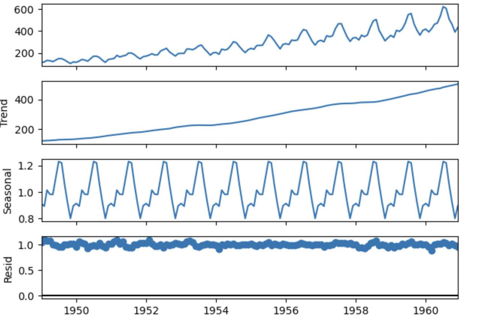
Figure 1. Different components on U.S. Airline Passengers source: https://www.geeksforgeeks.org/machine-learning/seasonality-detection-in-time-series-data/ . |
Stationary Random Process#
Strong (Strict) Stationarity:
A time series is strongly stationary if, for every \(n \geq 1\), every choice of times \(t_1, t_2, \dots , t_n\), and time shift \(h \in \mathbb{Z}\), the joint distribution satisfies:
The statistical properties are invariant under time shifts.
In simple words: the joint distribution is identical to that of any time-shifted version.
Weak Stationarity
Reminder: \(\mathbb{E}\) is the expectation (or expected value) operator. \(\mathbb{E}[X]\) is a single number representing the “average value” of the random variable \(X\), weighted by the probabilities of its outcomes.
A time series \(X_t\) is weakly stationary (second-order stationary) if:
\(\mathbb{E}[X_t^2] < \infty\) (the series converges to a finite number)
\(\mathbb{E}[X_t] = \mu\) is constant in \(t\)
\(\text{Cov}(X_t, X_{t+h}) = \gamma(h)\), depends only on the lag (time shift) \(h\) and not on \(t\)
We present these for completeness we will not dwell on them.
Where the covariance is defined as:
We also define the autocovariance function (ACVF), which is the covariance of the time series with a shifted version of itself:
Furthermore, the autocorrelation function (ACF) is defined as:
In simple words: weak stationarity means the mean and autocovariance are the same regardless of when you start observing.
The “colors” of noise:#
Stationary processes are often classified by how quickly their autocovariance \(\gamma(h)\) decays.
White noise: \(\gamma(h) = 0\) for \(h \neq 0\) each point independent of the rest.
Pink (flicker) noise: \(\gamma(h)\) decays slowly.
Red (Brownian / random-walk) noise: \(\gamma(h)\) decays the slowest.
Why call it “noise”?
So far, “noise” meant unwanted randomness added on top of a signal we cared about. The name noise in time series is kept by convention, but from here on “noise” refers to a random process being studied (our signal), not an error term.
Source: Brockwell & Davis 2016
Calculation of Metrics for Discrete Data#
The following formulas are presented for completeness.
Let \(x_1, \ldots, x_n\) be observations of a time series. The sample mean of \(x_1, \ldots, x_n\) is
The sample autocovariance function is
The sample autocorrelation function is
Food for thought
What would the ACF look like for a purely white-noise process?
Hint: if every observation is independent, what is \(\text{Cov}(X_t, X_{t+h})\) for \(h \neq 0\)?
Discuss with your teammate, then report.
[Derivation] (click here to expand)
For white noise, \(\text{Cov}(X_t, X_{t+h}) = 0\) for all \(h \neq 0\), so \(\rho(h) = 0\) for \(h \neq 0\) and \(\rho(0) = 1\). The ACF is a single spike at zero and nothing elsewhere. In the PSD this corresponds to a flat (white) spectrum equal power at all frequencies. The correlated light curves we study today have \(\rho(h) \neq 0\) for small \(h\). Whether a series is actually consistent with white noise can be checked directly: a null hypothesis of no autocorrelation, a test statistic built from the sample ACF, and a decision at a chosen significance level.
Light Curves of an AGN#
Active Galactic Nuclei (AGN) are some of the most energetic, persistent sources of radiation in the Universe, powered by the accretion of matter onto a supermassive black hole at the centre of a galaxy.
As matter spirals inward through the accretion disk, it heats up and radiates in all wavelengths. The result is a highly variable source: the count rate fluctuates on timescales from seconds to years, driven by turbulence, disk instabilities, and the stochastic nature of the accretion flow itself. Crucially, this variability is not noise to be removed, it is a direct probe of the physics happening close to the black hole, on scales we could never spatially resolve (Paolillo & Papadakis 2025).
What does the variability look like in frequency space?
The X-ray variability of AGN is described by a bending power-law PSD:
The bend frequency \(f_{ m bend}\) or bend timescale \(T_{ m bend} = 1/f_{ m bend}\), is physically meaningful: it correlates with the mass of the black hole and possibly with its accretion rate. Measuring it from the light curve gives an indirect handle on one of the most fundamental properties of the system, without needing to spatially resolve the source.
{kind=link}
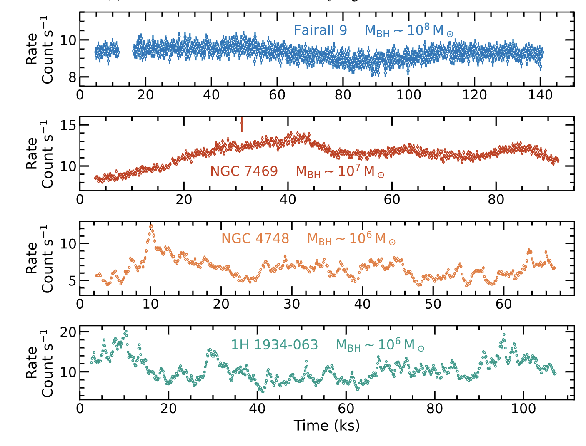
{kind=link}
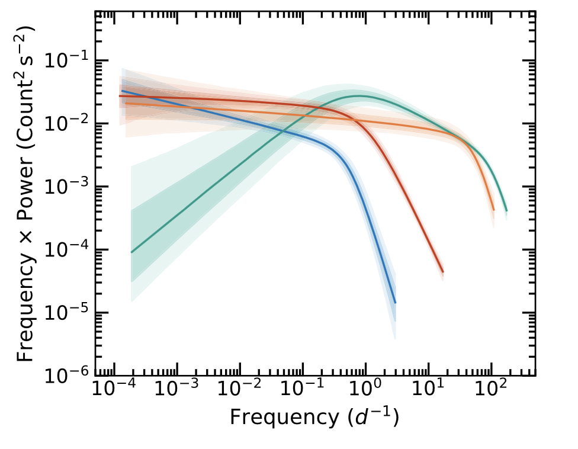
Figure 2. Left — Segments of XMM–Newton light curves in the 0.3 − 1.5 keV band for Fairall 9, NGC 7469, NGC 4748 and 1H 1934-063 . Right — Posterior power spectral densities for Fairall 9, NGC 4748, 1H 1934-063 and NGC 7469. Source: Lefkir et al. 2025 |
The data
The light curves in this notebook are simulations of X-ray observations of a typical Seyfert AGN, generated to reproduce the statistical properties expected from a modern X-ray survey telescope.
Two datasets are provided intentionally:
Regularly sampled — the ideal case we start with, where classical FFT-based tools work
With seasonal gaps — the realistic case, where we need more sophisticated methods (CARMA)
Understanding the difference between these two cases, and knowing which tool to apply in which situation, is the main goal of this notebook.
Load and Visualize the Data#
df_lc = pd.read_csv("data/Lc_ungapped.csv")
display(df_lc.head())
| time_days | rate_emm13 | rate_source | rate_bkg | rate_total | err | |
|---|---|---|---|---|---|---|
| 0 | 0.0 | 0.009068 | 0.008657 | 0.000162 | 0.008819 | 0.000459 |
| 1 | 0.5 | 0.011465 | 0.011389 | 0.000231 | 0.011620 | 0.000525 |
| 2 | 1.0 | 0.010252 | 0.010671 | 0.000162 | 0.010833 | 0.000507 |
| 3 | 1.5 | 0.011740 | 0.011551 | 0.000509 | 0.012060 | 0.000534 |
| 4 | 2.0 | 0.010329 | 0.010440 | 0.000370 | 0.010810 | 0.000506 |
fig, ax = plt.subplots(figsize=(12, 4))
ax.errorbar(
df_lc["time_days"], df_lc["rate_total"],
yerr=df_lc["err"],
fmt=".", ms=4, lw=1, color="steelblue",
)
ax.set_xlabel("Time (days)")
ax.set_ylabel("Count Rate")
ax.set_title("Regularly Sampled Light Curve")
plt.tight_layout()
plt.show()
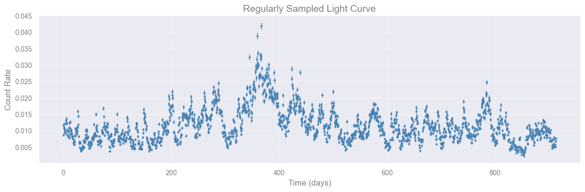
Task [2 min]
Look at the light curve above.
Does the mean rate appear constant over the full ~900-day baseline?
Can you spot any obvious trend, periodic pattern, or unusually bright/faint interval by eye?
Check if LC is Regularly Sampled#
Good practise is to always check:
If a time series is regularly sampled or not
The number of points
The cadance
If there are gaps
@dataclass
class SamplingResult:
is_uniform: bool
cadence: float
cadence_std: float
n_points: int
total_span: float
gaps: list = field(default_factory=list)
def __repr__(self):
lines = [
f"Sampling: {'UNIFORM' if self.is_uniform else 'IRREGULAR'}",
f" Points : {self.n_points}",
f" Span : {self.total_span:.3f}",
f" Cadence : {self.cadence:.4f} (std={self.cadence_std:.4f})",
]
if self.gaps:
lines.append(f" Gaps : {len(self.gaps)}")
for g in self.gaps:
lines.append(
f" [{g['t_start']:.3f} – {g['t_end']:.3f}] "
f"duration={g['duration']:.1f} days"
)
else:
lines.append(" Gaps : none")
return "\n".join(lines)
def check_sampling(
time: np.ndarray,
uniform_tol: float = 0.01,
min_gap: float = 3.0,
) -> SamplingResult:
"""
Check whether a light curve is uniformly sampled and detect seasonal gaps.
Parameters
----------
time : 1-D sorted array of observation times (days).
uniform_tol : std(dt)/median(dt) threshold below which sampling is
declared uniform (default 0.01 = 1%).
min_gap : minimum interval (in the same units as time) to be
counted as a gap. Default 3.0 days — catches multi-day
seasonal absences while ignoring normal cadence jitter.
"""
time = np.asarray(time, dtype=float)
if time.ndim != 1 or len(time) < 2:
raise ValueError("time must be a 1-D array with at least 2 elements")
if np.any(np.diff(time) < 0):
raise ValueError("time array must be sorted in ascending order")
dt = np.diff(time)
median_dt = float(np.median(dt))
std_dt = float(np.std(dt))
is_uniform = (std_dt / median_dt) < uniform_tol
gaps = []
for idx in np.where(dt > min_gap)[0]:
gaps.append({
"t_start": float(time[idx]),
"t_end": float(time[idx + 1]),
"duration": float(dt[idx]),
})
return SamplingResult(
is_uniform=is_uniform,
cadence=median_dt,
cadence_std=std_dt,
n_points=len(time),
total_span=float(time[-1] - time[0]),
gaps=gaps,
)
result = check_sampling(df_lc["time_days"].values, min_gap=30)
print(result)
Sampling: UNIFORM
Points : 1826
Span : 912.500
Cadence : 0.5000 (std=0.0000)
Gaps : none
Frequency-domain analysis: Fourier Transform#
So far we’ve described a time series through its autocovariance function \(\gamma(h)\), a function of time-lag \(h\), living in the time domain. There is an equivalent, complementary description in the frequency domain: instead of asking “how correlated are observations separated by lag \(h\)?”, we ask “how much of the variance is carried by oscillations at frequency \(\omega\)?”.
The bridge between the two descriptions is the Fourier transform, and in practice we compute it with the Fast Fourier Transform (FFT).
The Fourier transform of a finite series
Given an evenly-spaced time series \(x_0, x_1, \ldots, x_{N-1}\) sampled at interval \(\Delta t\), the discrete Fourier transform (DFT) is
The transform is invertible: given the \(\tilde{x}_k\) you can reconstruct the \(x_t\) exactly. So no information is lost.
{kind=link}
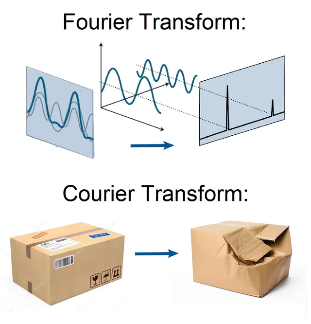
Figure 3. Fourier VS Courier Transform, one is reversible the other not. |
We use the FFT instead of a direct DFT calculation because it computes the same result in \(O(N \log N)\) operations rather than \(O(N^2)\), which matters once a light curve has many thousand points.
Key frequencies
Two frequencies define the resolution of the analysis:
Nyquist frequency: \(\omega_{\rm Ny} = 1/(2\Delta t)\). The highest frequency you can resolve with sampling interval \(\Delta t\).
Frequency resolution: \(\Delta\omega = 1/(N \Delta t) = 1/T\), where \(T = N \Delta t\) is the total observation duration. Longer baselines give finer frequency resolution. Two oscillations closer than \(\Delta\omega\) apart cannot be separated.
The practical implication: to detect a signal of frequency \(\omega\), you need \(\omega < \omega_{\rm Ny}\) (sample fast enough) and you need \(T \gtrsim\) several periods (observe long enough).
You can find more in van der Klis 1989, Brockwell & Davis 2016
To detect a signal of frequency \(\omega\) you need two things simultaneously:
\(\omega < \omega_{\rm Ny} = 1/(2\Delta t)\) sample fast enough (Nyquist constraint)
\(T = N\Delta t \gtrsim\) several periods, observe long enough (resolution constraint)
Violating either makes the signal undetectable.
cadence = result.cadence # days
n = len(df_lc)
# np.fft.rfftfreq builds the frequency bins f_k = k / (n * cadence) for k = 0, ..., n // 2,
# i.e. the frequency axis matching the output of np.fft.rfft below
freqs = np.fft.rfftfreq(n, d=cadence) # cycles / day
# np.fft.rfft computes the discrete Fourier transform of a real-valued signal, returning only
# the non-negative frequency half of the spectrum (the negative half is its mirror image for real input)
fft = np.fft.rfft(df_lc["rate_total"].values) # 1D discrete Fourier transform of the light curve
In-class discussion [3 min]
Why is the zeroth FFT component the mean of the light curve times the number of samples?
Look at the DFT formula: \(\tilde{x}_k = \sum_{t=0}^{N-1} x_t\, e^{-2\pi i\, k t / N}\). What happens when \(k = 0\)?
Discuss with your teammate, then report.
[Spoiler] (click here to expand)
When \(k = 0\), every exponential becomes \(e^0 = 1\), so \(\tilde{x}_0 = \sum_{t=0}^{N-1} x_t = N \cdot \bar{x}\). The zeroth component carries the DC offset (DC, borrowed from electronics for direct current, denotes a zero-frequency, constant signal, here, the average value / constant background level) with no oscillatory information. This is why we exclude it from the PSD and why dividing fft[0] by \(N\) gives the mean count rate in one line.
The quantity we plot below is the power, \(P(f_k) = |\tilde{x}_k|^2\), the squared modulus of the Fourier coefficient at frequency \(f_k\).
# plot the fourier transform power as a function of the frequency, ignoring the zeroth component
plt.figure(figsize=(12, 6))
plt.loglog(freqs[1:], np.abs(fft)[1:]**2, lw=0.8)
# Make plot pretty
plt.xlabel('Frequency')
plt.ylabel('Power')
plt.title('Fourier Transform of Light Curve')
plt.show()
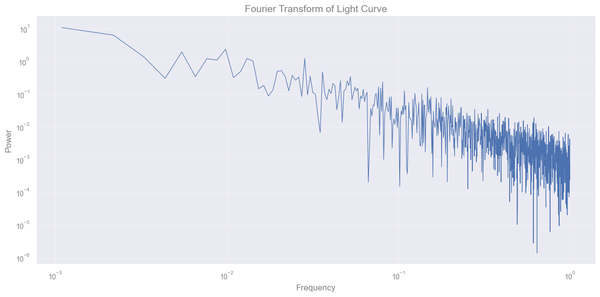
Power spectrum density (PSD)#
Is the Fourier transform of the autocovariance:
This is the Wiener–Khinchin theorem and it is the deep reason the time-domain (\(\gamma\)) and frequency-domain (\(f\)) descriptions are equivalent: each is the Fourier transform of the other.
In practice we estimate the PSD from a finite sample using the periodogram:
where \(N\) is the number of points, \(\Delta t\) is the sampling cadence, and \(\tilde{x}_k\) is the discrete Fourier transform of the data at frequency \(f_k\).
Because it is built from a single finite, realization of the process, the periodogram \(I(f_k)\) is itself a random variable with a known sampling distribution, which is what lets you judge whether a peak is statistically significant rather than just eyeballing it.
Why we do PSD analysis?#
For a stationary (Gaussian) stochastic process, the PSD is the complete second-order description of the variability. The mean plus PSD fully specify the process.
The slope tells you the character of the noise process:
The same canonical shapes (white \(f^0\), flicker/pink \(f^{-1}\), red/Brownian \({f^-2}\), and steeper) recur across accreting systems, pulsating and granulating stars, pulsar timing, and more.
Breaks or bends mark characteristic timescales (a damping/relaxation time, a viscous or thermal time, a rotation period)
Narrow bumps / Lorentzians on top of the continuum are oscillations (QPOs, p-modes)
[More details] (click here to expand)
Different stochastic processes leave different signatures in the PSD:
White noise: flat spectrum, \(f(\omega) = \sigma^2\) equal power at all frequencies (hence “white”).
Pink (flicker) noise: \(f(\omega) \propto \omega^{-1}\) power falls off gently towards high frequencies.
Red (Brownian / random-walk) noise: \(f(\omega) \propto \omega^{-2}\) power falls off steeply towards high frequencies.
Periodic signal: a sharp spike at the signal frequency (and at its harmonics if the waveform is non-sinusoidal).
Quasi-periodic oscillation (QPO): a broad bump, narrower than the continuum but wider than a delta function characteristic of damped oscillators (accreting compact objects show these prominently).
# calculate the one-sided power spectral density (PSD) of the light curve
psd = (np.abs(fft) ** 2) / (n * cadence) # one-sided PSD
# exclude the DC component (freq = 0)
freqs = freqs[1:]
psd = psd[1:]
plt.figure(figsize=(12, 6))
plt.loglog(1 / freqs, psd, lw=0.8, color="darkorange")
plt.xlabel("Period (days)")
plt.ylabel("Power")
plt.title("")
plt.gca().invert_xaxis()
plt.tight_layout()
plt.show()
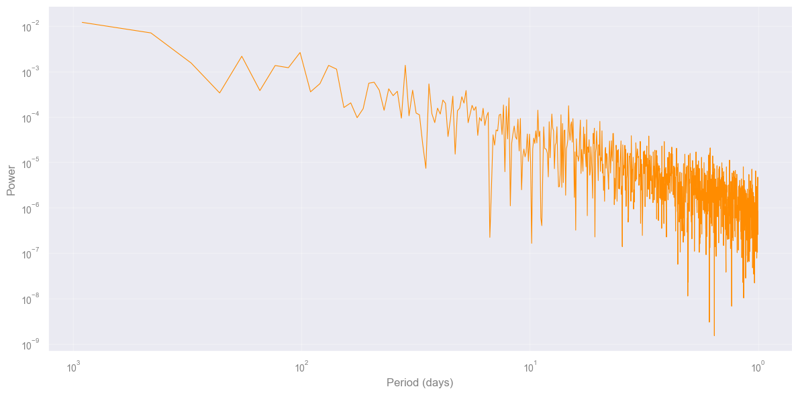
Exercise [5 min]
Objective: Understand how sampling parameters affect the shape of the PSD.
Task: Go back to the PSD code cell above and re-run it after making each of the following changes one at a time, restoring the original before trying the next.
Double the cadence: replace
cadence = result.cadencewithcadence = result.cadence * 2
→ What happens to the longest period visible on the x-axis? Why?Halve the number of points: replace
n = len(df_lc)withn = len(df_lc) // 2, and usefft = np.fft.rfft(df_lc["rate_total"].values[:n])
→ What happens to the shortest period (frequency resolution)? Why?
No new functions needed just tweak the existing cell and observe.
# Modify the PSD cell above and re-run it. No new code needed here.
[Solution below]
# Solution 1
# replace cadence = result.cadence with:
cadence = result.cadence * 2 # days
"""Nyquist period doubles — lose the short-period end"""
# Solution 2
# replace n = len(df_lc) with:
n = len(df_lc) // 2
"""Frequency resolution halves — fewer points in the spectrum"""
'Frequency resolution halves — fewer points in the spectrum'
[End of solution]
# reset parameters to original values
cadence = result.cadence
n = len(df_lc)
freqs = np.fft.rfftfreq(n, d=cadence)
fft = np.fft.rfft(df_lc["rate_total"].values)
psd = (np.abs(fft) ** 2) / (n * cadence)
freqs = freqs[1:]
psd = psd[1:]
First we need to rebin the data#
The raw periodogram is linearly spaced in frequency, so a fixed-width range at high frequency (short periods) contains far more raw points than the same-width range at low frequency. Fit directly on the raw points and this dense high-frequency tail dominates the fit, pulling it away from the low-frequency behaviour. Averaging into equal-width bins in log-frequency (log-binning) gives each decade comparable weight regardless of how many raw points fall in it.
def bin_psd_log(freqs, psd, n_bins=40):
"""Bin a periodogram into equal-width bins in log10(frequency)."""
log_freqs = np.log10(freqs)
bin_edges = np.linspace(log_freqs.min(), log_freqs.max(), n_bins + 1)
bin_index = np.digitize(log_freqs, bin_edges) - 1
freqs_binned = []
psd_binned = []
for b in range(n_bins):
# average every raw point that falls in bin b
in_bin = bin_index == b
if np.any(in_bin):
freqs_binned.append(np.mean(freqs[in_bin]))
psd_binned.append(np.mean(psd[in_bin]))
return np.array(freqs_binned), np.array(psd_binned)
freqs_binned, psd_binned = bin_psd_log(freqs, psd)
Exercise [15 min]
From here it is just a matter of fitting the PSD to identify which process best describes this variability.
This data set was simulated with a PSD that follows a bending power law, meaning two smoothly connected power laws: one with slope \(\alpha_1 = -1\) below the bending frequency (long periods / low frequencies), and a slope \(\alpha_2 = -2\) above the bending frequency (short periods / high frequencies).
With that in mind, fit a bending power law to the binned periodogram (freqs_binned, psd_binned from above, not the raw freqs, psd).
What does this tell you about the PSD (what time scales we are investigating)?
# Student: Write your code here. Add blocks as you deem fit.
def bending_powerlaw(f, A, alpha_lo, alpha_hi, f_bend):
return A * f**(-alpha_lo) / (1.0 + (f / f_bend)**(alpha_hi - alpha_lo))
def fit_bpl_psd(freqs, psd):
"""Fit a bending power law to a PSD in log-log space."""
log_p = np.log10(psd)
def _log_model(f, log_A, alpha_lo, alpha_hi, log_f_bend):
return ...
p0 = [np.log10(np.median(psd)), 1.0, 2.0, np.log10(np.median(freqs))]
bounds = ([-np.inf, 0.0, 0.0, -np.inf], [np.inf, 6.0, 12.0, np.inf])
popt, pcov = ...
perr = np.sqrt(np.diag(pcov))
return dict(
A = ... ,
alpha_lo = ... ,
alpha_hi = ... ,
f_bend = ... ,
)
fit_bpl = fit_bpl_psd(freqs_binned, psd_binned)
print("Bending power law fit")
print(f"Normalization A: {fit_bpl['A']:.4e} ± {fit_bpl['A_err']:.4e}")
print(f"Low-freq slope α_lo: {fit_bpl['alpha_lo']:.3f} ± {fit_bpl['alpha_lo_err']:.3f}")
print(f"High-freq slope α_hi: {fit_bpl['alpha_hi']:.3f} ± {fit_bpl['alpha_hi_err']:.3f}")
print(f"Bend frequency f_b: {fit_bpl['f_bend']:.4e} cycles/day ± {fit_bpl['f_bend_err']:.4e}")
print(f"Bend timescale T_b: {1/fit_bpl['f_bend']:.2f} days")
f_model = np.geomspace(freqs.min(), freqs.max(), 500)
p_bpl = bending_powerlaw(f_model, fit_bpl['A'], fit_bpl['alpha_lo'], fit_bpl['alpha_hi'], fit_bpl['f_bend'])
fig, ax = plt.subplots(figsize=(10, 5))
ax.loglog(1 / freqs, psd, lw=0.8, color="darkorange", alpha=0.3, label="PSD (raw periodogram)")
ax.loglog(1 / freqs_binned, psd_binned, "o", color="black", ms=4, label="PSD (log-binned, used for fit)")
ax.loglog(1 / f_model, p_bpl, lw=2.0, color="crimson", label=rf"Bending PL $\alpha_{{lo}}$ = {fit_bpl['alpha_lo']:.2f}, $\alpha_{{hi}}$ = {fit_bpl['alpha_hi']:.2f}")
ax.axvline(1 / fit_bpl['f_bend'], ls=":", color="grey", lw=1.5,
label=rf"$T_{{bend}}$ = {1/fit_bpl['f_bend']:.1f} days")
ax.set_xlabel("Period (days)")
ax.set_ylabel("PSD")
ax.set_title("PSD with bending power law fit")
ax.invert_xaxis()
ax.legend()
plt.tight_layout()
plt.show()
[Solution below]
# This function will be provided
def bending_powerlaw(f, A, alpha_lo, alpha_hi, f_bend):
"""
P(f) = A * f^{-alpha_lo} / [1 + (f / f_bend)^{alpha_hi - alpha_lo}]
Asymptotes: f << f_bend → P ∝ f^{-alpha_lo} (low-freq slope)
f >> f_bend → P ∝ f^{-alpha_hi} (high-freq slope)
"""
return A * f**(-alpha_lo) / (1.0 + (f / f_bend)**(alpha_hi - alpha_lo))
# They need to write this part on their own
def fit_bpl_psd(freqs, psd):
"""Fit a bending power law to a PSD in log-log space."""
log_p = np.log10(psd)
def _log_model(f, log_A, alpha_lo, alpha_hi, log_f_bend):
return np.log10(bending_powerlaw(f, 10**log_A, alpha_lo, alpha_hi, 10**log_f_bend))
p0 = [np.log10(np.median(psd)), 1.0, 2.0, np.log10(np.median(freqs))]
bounds = ([-np.inf, 0.0, 0.0, -np.inf], [np.inf, 6.0, 12.0, np.inf])
popt, pcov = curve_fit(_log_model, freqs, log_p, p0=p0, bounds=bounds, maxfev=20000)
perr = np.sqrt(np.diag(pcov))
return dict(
A = 10**popt[0], A_err = perr[0] * 10**popt[0] * np.log(10),
alpha_lo = popt[1], alpha_lo_err = perr[1],
alpha_hi = popt[2], alpha_hi_err = perr[2],
f_bend = 10**popt[3], f_bend_err = perr[3] * 10**popt[3] * np.log(10),
)
fit_bpl = fit_bpl_psd(freqs_binned, psd_binned)
print("Bending power law fit")
print(f"Normalization A: {fit_bpl['A']:.4e} ± {fit_bpl['A_err']:.4e}")
print(f"Low-freq slope α_lo: {fit_bpl['alpha_lo']:.3f} ± {fit_bpl['alpha_lo_err']:.3f}")
print(f"High-freq slope α_hi: {fit_bpl['alpha_hi']:.3f} ± {fit_bpl['alpha_hi_err']:.3f}")
print(f"Bend frequency f_b: {fit_bpl['f_bend']:.4e} cycles/day ± {fit_bpl['f_bend_err']:.4e}")
print(f"Bend timescale T_b: {1/fit_bpl['f_bend']:.2f} days")
Bending power law fit
Normalization A: 7.1896e-06 ± 7.5797e-06
Low-freq slope α_lo: 1.013 ± 0.193
High-freq slope α_hi: 2.056 ± 0.651
Bend frequency f_b: 2.0486e-01 cycles/day ± 3.3307e-01
Bend timescale T_b: 4.88 days
f_model = np.geomspace(freqs.min(), freqs.max(), 500)
p_bpl = bending_powerlaw(f_model, fit_bpl['A'], fit_bpl['alpha_lo'], fit_bpl['alpha_hi'], fit_bpl['f_bend'])
fig, ax = plt.subplots(figsize=(10, 5))
ax.loglog(1 / freqs, psd, lw=0.8, color="darkorange", alpha=0.3, label="PSD (raw periodogram)")
ax.loglog(1 / freqs_binned, psd_binned, "o", color="black", ms=4, label="PSD (log-binned, used for fit)")
ax.loglog(1 / f_model, p_bpl, lw=2.0, color="crimson", label=rf"Bending PL $\alpha_{{lo}}$ = {fit_bpl['alpha_lo']:.2f}, $\alpha_{{hi}}$ = {fit_bpl['alpha_hi']:.2f}")
ax.axvline(1 / fit_bpl['f_bend'], ls=":", color="grey", lw=1.5,
label=rf"$T_{{bend}}$ = {1/fit_bpl['f_bend']:.1f} days")
ax.set_xlabel("Period (days)")
ax.set_ylabel("Power")
ax.set_title("PSD with bending power law fit")
ax.invert_xaxis()
ax.legend()
plt.tight_layout()
plt.show()
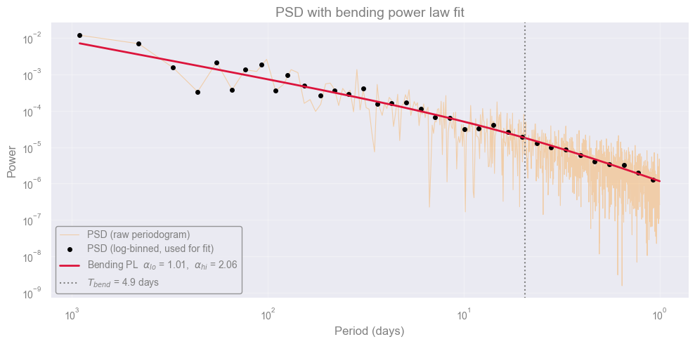
We are probing lower frequencies in the PSD, meaning we are capturing the long-timescale information of the system.
[End of solution]
Until now#
Until now we taught:
Fundamental of signal processing Fourier transformetion
Sampling constraints: Nyquist frequency and frequency resolution
The periodogram as an estimator of the PSD, and reading the PSD shape to identify the process
To fully describe a Random Process
What is happening in reality?#
{kind=link}
Real time series especially in astronomy are rarely complete. Gaps arise from:
Observing constraints: daytime, weather, the target being below the horizon, the Moon being too close, the satellite being in the South Atlantic Anomaly.
Instrumental issues: detector saturation, cosmic-ray hits, telemetry dropouts, scheduled downtime.
Irregular cadence by design: queue-scheduled observations, target-of-opportunity interrupts.
The result is a series \(\{x_t\}\) where some \(t \in T_0\) have no observation.
df_lc_gaps = pd.read_csv("data/Lc_irregular.csv")
fig, ax = plt.subplots(figsize=(12, 4))
ax.errorbar(
df_lc_gaps["time_days"], df_lc_gaps["rate_total"],
yerr=df_lc_gaps["err"],
fmt=".", ms=4, lw=1, color="steelblue",
)
ax.set_xlabel("Time (days)")
ax.set_ylabel("Rate")
ax.set_title("Regularly Sampled Light Curve")
plt.tight_layout()
plt.show()
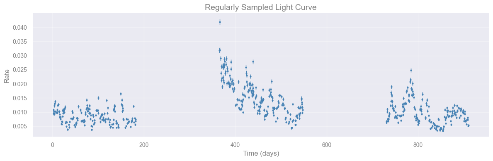
In-class discussion [5 min]
What would happen if we applied np.fft.rfft directly to this irregularly sampled light curve?
Consider: what does the FFT assume about the spacing between points? What would the “frequencies” \(\omega_k = k/(N\Delta t)\) mean if \(\Delta t\) is not constant?
Discuss with your teammate
[Spoiler] (click here to expand)
The FFT assumes uniform spacing \(\Delta t\). If we pass it irregularly spaced data, numpy treats the array indices as if they were evenly spaced, which they are not. The computed “frequencies” correspond to an imaginary uniform cadence, not the real observation times, so the result is meaningless. This motivates methods like the Lomb–Scargle periodogram and the CARMA likelihood that work natively with arbitrary timestamps.
result_real = check_sampling(df_lc_gaps["time_days"].values, min_gap=30)
print(result_real)
Sampling: IRREGULAR
Points : 557
Span : 908.500
Cadence : 0.5000 (std=10.9382)
Gaps : 2
[182.000 – 365.500] duration=183.5 days
[547.500 – 730.500] duration=183.0 days
Approaches to handling irregularly sampled data:
Ignore and work irregularly: use methods that natively handle uneven sampling (Lomb–Scargle periodogram, structure functions, Gaussian processes). \(\leftarrow\) what we do in this notebook
Interpolation / Imputation: fill gaps with a deterministic rule (linear, spline, nearest neighbor). Simple, but introduces artificial correlations and underestimates uncertainty in the gaps.
CARMA Modeling#
The problem with irregular sampling#
All the tools we have used so far assume that data are evenly spaced in time. Real astronomical light curves rarely are. Observations are interrupted by the day/night cycle, weather, satellite orbits, and scheduling constraints.
The solution: work in continuous time#
The natural fix is to define the model for all \(t \in \mathbb{R}\), so that any sampling pattern is automatically handled. This leads to Continuous AutoRegressive Moving Average (CARMA) models. (Kelly et al. 2009, Kelly et al. 2014)
From discrete ARMA to continuous CARMA#
Before introducing the continuous-time model, it helps to build intuition with its discrete-time ancestor. The AutoRegressive Moving Average (ARMA) model.
An ARMA(1,1) process is defined by the recursion:
where \(Z_t \sim \mathcal{N}(0, \sigma^2)\) is white noise and:
\(\varphi\) is the autoregressive (AR) coefficient: controls how much the current value depends on the previous one. Large \(|\varphi|\) means strong memory; \(\varphi > 0\) gives smooth trends, \(\varphi < 0\) gives oscillations.
\(\theta\) is the moving average (MA) coefficient: controls how much the previous noise term carries forward.
\(\sigma\) is the noise amplitude.
The key constraint for stationarity is \(|\varphi| < 1\): the process must forget its past.
The limitation: this recursion assumes observations are equally spaced in time. Real astronomical light curves break this assumption. CARMA is the fix: it generalises ARMA to continuous time so any sampling pattern is handled.
def simulate_arma11(phi, theta, sigma, n_points=400, seed=42):
"""Simulate an ARMA(1,1) process: X_t = phi*X_{t-1} + Z_t + theta*Z_{t-1}"""
rng = np.random.default_rng(seed)
z = rng.normal(0, sigma, n_points + 1)
x = np.zeros(n_points)
x[0] = z[1]
for t in range(1, n_points):
x[t] = phi * x[t - 1] + z[t + 1] + theta * z[t]
return x
def plot_arma(phi, theta, sigma):
x = simulate_arma11(phi, theta, sigma)
t = np.arange(len(x))
# Sample ACF
max_lag = 50
conf = 1.96 / np.sqrt(len(x))
acf_vals = [1.0]
for lag in range(1, max_lag + 1):
acf_vals.append(float(np.corrcoef(x[lag:], x[:-lag])[0, 1]))
fig, axes = plt.subplots(1, 2, figsize=(12, 3))
# Light curve
axes[0].plot(t, x, lw=0.7, color="steelblue")
axes[0].axhline(0, color="grey", lw=0.5, ls="--")
axes[0].set_xlabel("Time step")
axes[0].set_ylabel("X(t)")
axes[0].set_title(
rf"ARMA(1,1) $\varphi$={phi:.2f}, $\theta$={theta:.2f}, $\sigma$={sigma:.1f}"
)
# ACF
axes[1].bar(range(max_lag + 1), acf_vals, color="steelblue", alpha=0.7, width=0.8)
axes[1].axhline( conf, color="firebrick", lw=1, ls="--", label="95% CI")
axes[1].axhline(-conf, color="firebrick", lw=1, ls="--")
axes[1].axhline(0, color="grey", lw=0.5)
axes[1].set_xlabel("Lag")
axes[1].set_ylabel("ACF")
axes[1].set_title("Sample Autocorrelation Function")
axes[1].legend(fontsize=8)
plt.tight_layout()
plt.show()
widgets.interact(
plot_arma,
phi = widgets.FloatSlider(value=0.8, min=-0.99, max=0.99, step=0.05,
description="φ (AR):", continuous_update=False,
style={"description_width": "80px"}),
theta = widgets.FloatSlider(value=0.2, min=-0.99, max=0.99, step=0.05,
description="θ (MA):", continuous_update=False,
style={"description_width": "80px"}),
sigma = widgets.FloatSlider(value=1.0, min=0.1, max=3.0, step=0.1,
description="σ (noise):", continuous_update=False,
style={"description_width": "80px"}),
)
<function __main__.plot_arma(phi, theta, sigma)>
Task [5 min]
Play with the sliders and observe the light curve and ACF. Try to answer:
Set \(\varphi = 0.95\), \(\theta = 0\). What happens to the ACF decay? How does this compare to \(\varphi = 0.3\)?
Set \(\varphi = -0.8\). What pattern appears in the light curve?
Set \(\varphi = 0.8\), then increase \(\theta\) from \(0\) to \(0.8\). What changes?
No code needed — just move the sliders.
[Spoiler] (click here to expand)
1. \(\varphi = 0.95\) vs \(\varphi = 0.3\)
The bigger \(\varphi\) is, the longer the process “remembers” its past values. With \(\varphi = 0.95\), the light curve today still looks similar to itself many steps ago, so the ACF bars stay tall for a long time. With \(\varphi = 0.3\), that memory fades away after just a few steps and the ACF bars drop to near zero almost immediately. The AR coefficient controls how long the process remembers.
2. \(\varphi = -0.8\)
The light curve zig-zags: each point jumps to the opposite side of zero from the point before it, because a negative \(\varphi\) pushes the process away from its last value instead of following it. The ACF zig-zags too, alternating between positive and negative bars. Real AGN light curves rarely look like this — they tend to vary smoothly instead.
3. Increasing \(\theta\) from \(0\) to \(0.8\) (with \(\varphi = 0.8\) fixed)
Turning up \(\theta\) makes each point depend a bit more directly on the random kick right before it, so the correlation at lag 1 gets a small boost and the curve looks slightly smoother close-up. Further out, the ACF barely changes — that longer-range shape is still set by \(\varphi\). In short: \(\theta\) only affects the short term, \(\varphi\) controls the long-term memory.
The Simplest CARMA model (Damped Random Walk)#
The simplest CARMA model is the CAR(1), also known as the Damped Random Walk (DRW), and is described by the stochastic differential equation:
Think of it this way:
The term \(-X(t)/\tau\) acts like a spring: it pulls the process back toward the mean. The larger \(\tau\), the weaker the restoring force.
The term \(\sigma\, dW(t)\) is a continuous random kick (Gaussian white noise driving the process).
The 2 parameters have direct physical meaning:
Parameter |
Meaning |
|---|---|
\(\tau\) |
Relaxation timescale: how long the system “remembers” past states. For an AGN this is related to the size of the emission region. |
\(\sigma\) |
Variability amplitude: how strongly the process is driven by the Gaussian white noise. |
Connection to Gaussian Processes#
The DRW is exactly a Gaussian Process (GP) with an exponential kernel \(k(\Delta t) = \sigma^2 e^{-|\Delta t|/\tau}\). You have already seen GP regression, the likelihood is the same formula.
The general CARMA(\(p\), \(q\)) model#
A CARMA(\(p, q\)) process is the stationary solution of the stochastic differential equation:
where \(\epsilon(t)\) is continuous-time white noise. The DRW above is the special case \(p=1\), \(q=0\).
Higher-order CARMA models can produce richer behaviours:
CARMA(2,0) / CARMA(2,1): can model a stochastically driven damped harmonic oscillator, producing a bump in the PSD the signature of a quasi-periodic oscillation (QPO).
How we fit it#
Because the model is defined in continuous time, the likelihood can be evaluated exactly at any set of observation times no interpolation, no gap-filling. We then explore the posterior of \(\tau\) and \(\sigma\) using Markov Chain Monte Carlo (MCMC) sampling.
[Derivation] DRW → GP log-likelihood (click here to expand)
The DRW SDE has stationary covariance \(k(\Delta t) = \sigma^2 e^{-|\Delta t|/\tau}\). Define the kernel matrix:
Since \(\boldsymbol{y} \sim \mathcal{N}(\boldsymbol{0}, K)\), the log-likelihood is:
Evaluated via Cholesky \(K = LL^\top\) at cost \(\mathcal{O}(N^3)\).
import emcee
t = df_lc_gaps["time_days"].values
y = df_lc_gaps["rate_total"].values
yerr = df_lc_gaps["err"].values
y_mean = np.mean(y)
y_res = y - y_mean
# the DRW kernel function, which defines the covariance between two time points t1 and t2
def drw_kernel(t1, t2, sigma, tau):
return sigma**2 * np.exp(-np.abs(t1[:, None] - t2[None, :]) / tau)
def log_likelihood(log_sigma, log_tau):
sigma, tau = np.exp(log_sigma), np.exp(log_tau)
K = drw_kernel(t, t, sigma, tau)
K[np.diag_indices_from(K)] += yerr**2
try:
cf = cho_factor(K, lower=True)
alpha = cho_solve(cf, y_res)
log_det = 2.0 * np.sum(np.log(np.diag(cf[0])))
return -0.5 * (y_res @ alpha + log_det + len(t) * np.log(2 * np.pi))
except np.linalg.LinAlgError:
return -np.inf
# a bounded-uniform prior belief about (log_sigma, log_tau) before seeing the data
def log_prior(log_sigma, log_tau):
if -12 < log_sigma < -2 and np.log(0.5) < log_tau < np.log(2000):
return 0.0
return -np.inf
# posterior is prior times likelihood, in log form: log_posterior = log_prior + log_likelihood
def log_posterior(params):
lp = log_prior(*params)
return lp + log_likelihood(*params) if np.isfinite(lp) else -np.inf
def neg_log_posterior(p):
return -log_posterior(p)
result = minimize(
neg_log_posterior,
x0=[np.log(0.002), np.log(50)],
method="Nelder-Mead",
options={"maxiter": 5000},
)
p_map = result.x
print(f"MAP σ = {np.exp(p_map[0]):.4e} τ = {np.exp(p_map[1]):.1f} days")
ndim, n_walkers = 2, 8
# walkers: n_walkers independent starting points, scattered around the MAP estimate
# (1 row of p0 per walker); each walker will grow its own chain
p0 = p_map + 0.1 * np.random.randn(n_walkers, ndim)
# sampler: runs the ensemble of walkers for 2000 steps each, producing n_walkers
# parallel chains that (after burn-in) sample the posterior of (log_sigma, log_tau)
sampler = emcee.EnsembleSampler(n_walkers, ndim, log_posterior)
sampler.run_mcmc(p0, 2000, progress=True)
MAP σ = 5.4669e-03 τ = 10.1 days
100%|██████████| 2000/2000 [00:33<00:00, 59.87it/s]
State([[-5.16879885 2.52128967]
[-5.31962336 2.15554783]
[-5.14768603 2.52544905]
[-5.24832222 2.12586308]
[-5.09653979 2.55769623]
[-5.17223258 2.39207498]
[-5.07695986 2.4830235 ]
[-4.98382229 2.79575902]], log_prob=[2599.07366446 2599.52039724 2599.75217391 2599.56271319 2600.09832226
2600.57422472 2599.10898327 2598.90795353], blobs=None, random_state=('MT19937', array([3109626580, 964358131, 3854885410, 1428551075, 3183043854,
2087083075, 3955310435, 484419256, 245471551, 2666647671,
4095139069, 3634756343, 3592846686, 500365549, 237813236,
1657746349, 3645078432, 4264859867, 1086060605, 340121752,
1855900838, 1979164691, 194874340, 3922239100, 4080343028,
1473214059, 4275846452, 2788993903, 484545329, 1439177107,
227095575, 3115669249, 3427612057, 3216324488, 3361959249,
3615815013, 2642447089, 368730677, 1845842863, 2414885161,
391912130, 2561670884, 4127869505, 2458389457, 2532854498,
1899866671, 3791639860, 2155098109, 2634845332, 2127406527,
4092172794, 599548539, 1315326928, 2172223636, 3966043601,
2950405616, 2663571022, 949224790, 4193177538, 1997914859,
3510054319, 3194067758, 317443415, 756964038, 1043256919,
2590605042, 2196192714, 3560482912, 2367134264, 2983243607,
1263471207, 3787290727, 4215131397, 4114964351, 1293077762,
1453980995, 1492376356, 716546718, 2434845988, 1880761400,
1105475982, 800542902, 2744882549, 2310611742, 1893853823,
2039173458, 3491534970, 3353753044, 2254354834, 69301520,
2558268847, 4207787739, 1551979973, 2726100332, 2611973730,
1952519893, 681451365, 103578471, 51701491, 3545574247,
3580147485, 708915890, 3517571951, 1417880490, 3528270007,
3326596030, 785961976, 4111333412, 3915513769, 3246901263,
201730170, 722955309, 1447783976, 3324361974, 1641090317,
425741031, 832298225, 660846711, 3640315778, 1702691631,
3683352031, 366886090, 927130969, 3921355293, 911556213,
3441854674, 2347255632, 977736385, 335190540, 3108135723,
1382285126, 3015654465, 3264068962, 2744892372, 3621797025,
2647303672, 2389247274, 12426986, 774759912, 2429756439,
1536181430, 4122011176, 2668541500, 3600955156, 1952960675,
3891304596, 1247226402, 739958030, 1646090439, 3028247698,
1949740726, 3186368964, 1449031760, 880473192, 550415741,
1851128296, 896606300, 2603822036, 1835560267, 1364972275,
1782791278, 3050518444, 984491155, 2488837897, 122709723,
3678702496, 1911905812, 2697243913, 1636887392, 2394145882,
3652390444, 2648235794, 1539983775, 378543154, 2439930190,
4105353618, 3888071313, 1547102533, 49635834, 1597230619,
1513675212, 1775948627, 221053093, 1477961356, 1671976320,
2257036558, 2303035171, 1375527836, 1507236778, 1425415278,
757326602, 1200144108, 227171935, 3574652735, 1887690944,
2149900611, 1767030897, 3547866868, 3327619997, 3662830938,
3384728497, 2289507639, 2649135161, 3905479243, 1429036423,
4033937087, 2794458662, 2381744674, 1871487467, 2081541182,
2201904686, 460396127, 527635170, 3040205200, 1928253235,
2882480195, 4078985861, 1133758765, 3986248326, 3136366385,
1852964598, 502420023, 925180159, 1057984213, 2546597222,
2690569937, 3761438608, 3590708368, 2070945911, 1545618058,
4130280107, 3274201154, 1158341198, 2548392465, 1833274088,
2033763645, 3799625800, 587273783, 92105024, 3194955822,
2279428356, 3274615557, 3870032790, 2998033554, 3994728496,
3820484241, 1690357255, 1927300851, 2808577363, 817130581,
3854104072, 1654014511, 4075977999, 1850395522, 3375613750,
3745200432, 1427199207, 3735108757, 235571164, 1086382600,
2078418809, 2672611749, 866700835, 3238542002, 3204198263,
1261813482, 3876628090, 1719352679, 2416029587, 1264955922,
1881411057, 3966288130, 2981884525, 1739999606, 2409408288,
1205874014, 3760421980, 660876816, 3651728399, 1945432496,
2448240131, 2764084884, 896014712, 162762094, 966084380,
2867250195, 3001340425, 1447644242, 435712291, 2720566041,
4120230223, 1447738883, 3962190121, 566944873, 2258216304,
2062956765, 1622685466, 3163469701, 3969506402, 2242226902,
3273029111, 4167203000, 3303996594, 3168267900, 4036081,
3133704850, 1620920686, 1920582973, 2359961486, 769908454,
4256846507, 373589677, 3739355423, 2009500408, 813828843,
836807640, 2525008958, 3495881095, 2508700235, 2787015175,
2198095797, 77230666, 3328895321, 1986600434, 2445932653,
2538653855, 648537873, 1750544582, 768266302, 405799794,
665428760, 615122545, 870297063, 1728844186, 219536201,
1354671514, 1814225812, 532014399, 4216128574, 1612359188,
3975345826, 2547789771, 3987692174, 1375383444, 682110838,
658670997, 1113894966, 1472483812, 2695556349, 2594960400,
259026543, 1731194055, 2763432253, 1305605933, 3958699048,
3036965469, 202186106, 3049687740, 1292375152, 1367491501,
1087713892, 1808887963, 824331289, 138783594, 123491200,
3973610311, 2978105450, 3792837002, 1733600177, 966511011,
3652397084, 1124961773, 428741001, 4038684111, 1346271489,
1711454990, 3816342573, 2549769126, 92520173, 4192523019,
2244949332, 3719603553, 3498699659, 2694837231, 279928151,
3712213725, 1269330199, 133694977, 3324444696, 3681934661,
2384269533, 513566169, 2529548720, 3224285219, 641029277,
3285649004, 2612509302, 319521733, 723559393, 3997456523,
160867067, 4041804217, 3378537153, 3771957814, 870877074,
2054273546, 3931011892, 2916503526, 3670179820, 1880998357,
4179521304, 2758214923, 2894385541, 21819131, 3389333800,
2760069448, 116431603, 2420026428, 3975514628, 1916441377,
3855963088, 1482664708, 1456496988, 3707913690, 1419039809,
648555186, 396906215, 1230467949, 649292558, 1554381799,
2046231970, 3716498670, 1488231058, 3690817727, 693508758,
2186543072, 3713076075, 1881222509, 3332973803, 1868851225,
1868769002, 3716342743, 2316833182, 1629536767, 3835601100,
3332300934, 2843450373, 2943965045, 941438288, 2799396065,
3308754728, 1929839142, 154872813, 1901355707, 1937519611,
3636989054, 1652432746, 3295140924, 449199376, 2032932702,
813123461, 4122826921, 1790860386, 2221700839, 2374161930,
3580672824, 2356411294, 2383516086, 1466097263, 2697456448,
2203534396, 302863854, 3299861709, 3404615813, 3380849270,
417137690, 3950472945, 3315822401, 3482213042, 407048538,
2268070419, 1400567625, 2350426216, 2564858310, 2187680643,
257684672, 1251793029, 2170604601, 2778929750, 4288611666,
3645155858, 817477724, 1068416366, 39874059, 286235470,
3961088904, 1082956147, 2417415338, 546553274, 640515306,
1345386959, 3566805290, 4167007042, 753534912, 2696928283,
124144277, 194671226, 3607551291, 2332856917, 2540379741,
2896091735, 497271762, 2581420323, 3196941724, 2924067172,
3673633978, 925021409, 197513273, 879137431, 2511112193,
3378895632, 2343720385, 2775169678, 253508521, 19301483,
2930417461, 801490685, 1593529783, 20561168, 142146755,
795012949, 3166237667, 497332542, 3647726465, 3430172425,
1307762317, 1148207812, 1267947123, 559817110, 3823499892,
1237563796, 3499057572, 2036106811, 3176632201, 3470925761,
3849425243, 4013126433, 2094103897, 2656663230, 2720225589,
4151284873, 3377231337, 1596277738, 2271526769, 683500365,
1570409131, 4276164570, 1668054542, 3090969239, 34538047,
1963849917, 3367684690, 245927081, 2425931653, 3646039289,
729716875, 378464292, 3306495959, 2661553734, 2062496357,
3768106869, 1640124097, 296300716, 1765609161, 455806074,
119522256, 445683717, 3942237432, 34181958, 254419598,
1485926612, 633121918, 648053671, 1241217651, 3200424790,
2847597202, 1378466859, 2281005543, 2568191107, 3236541541,
861818546, 1062257019, 2274470977, 4053106984, 1375951696,
1230878043, 3888901646, 4205942661, 1895388207, 306711923,
2588736048, 4043105217, 3385339763, 2999374852, 1864703604,
4051573698, 3835489376, 3677423798, 2788278117, 3849467564,
1089893108, 1942787586, 2652223841, 2060640793, 2544396548,
1814430169, 3716496834, 4187959136, 3417080339, 2797029339,
1450730678, 2221519662, 1959222126, 2266704668], dtype=uint32), 412, 0, 0.0))
# chains: sampler.get_chain() has shape (n_steps, n_walkers, ndim) — each of the
# n_walkers lines plotted below is 1 walker's chain for that parameter
fig, axes = plt.subplots(2, 1, figsize=(11, 5), sharex=True)
for i, (ax, label) in enumerate(zip(axes, [r"$\log\,\sigma$", r"$\log\,\tau$"])):
ax.plot(sampler.get_chain()[:, :, i], alpha=0.5, lw=0.6)
ax.set_ylabel(label)
axes[-1].set_xlabel("Step")
axes[0].set_title("MCMC chains (first 500 steps = burn-in)")
axes[0].axvline(500, color="k", lw=1, ls="--")
axes[1].axvline(500, color="k", lw=1, ls="--")
plt.tight_layout()
plt.show()
# burn-in: discard the first 500 steps, before the walkers had converged onto the
# posterior, then flatten the remaining steps of all walkers into one sample array
flat = sampler.get_chain(discard=500, flat=True)
sigma_s = np.exp(flat[:, 0])
tau_s = np.exp(flat[:, 1])
fig, axes = plt.subplots(2, 2, figsize=(7, 7))
axes[0, 0].hist(sigma_s, bins=50, color="steelblue", density=True)
axes[0, 0].set_xlabel(r"$\sigma$")
axes[1, 1].hist(tau_s, bins=50, color="steelblue", density=True)
axes[1, 1].set_xlabel(r"$\tau$ (days)")
axes[1, 0].scatter(sigma_s, tau_s, s=0.3, alpha=0.2, color="steelblue")
axes[1, 0].set_xlabel(r"$\sigma$"); axes[1, 0].set_ylabel(r"$\tau$ (days)")
axes[0, 1].axis("off")
plt.tight_layout()
plt.show()
def pm(x):
return np.median(x), np.percentile(x,84)-np.median(x), np.median(x)-np.percentile(x,16)
sm, sp, sn = pm(sigma_s)
tm, tp, tn = pm(tau_s)
print(f"σ = {sm:.4e} +{sp:.4e} −{sn:.4e}")
print(f"τ = {tm:.1f} +{tp:.1f} −{tn:.1f} days")
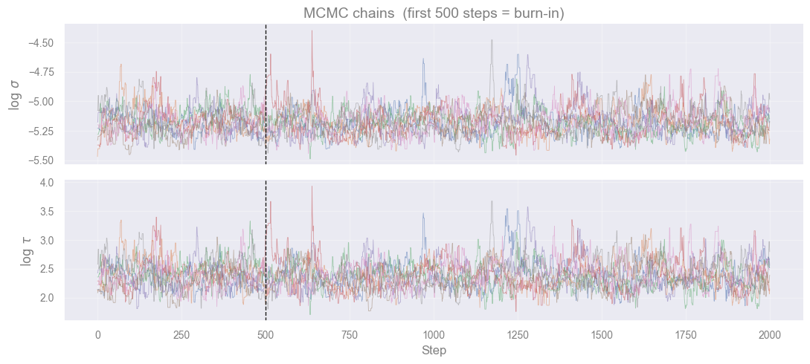
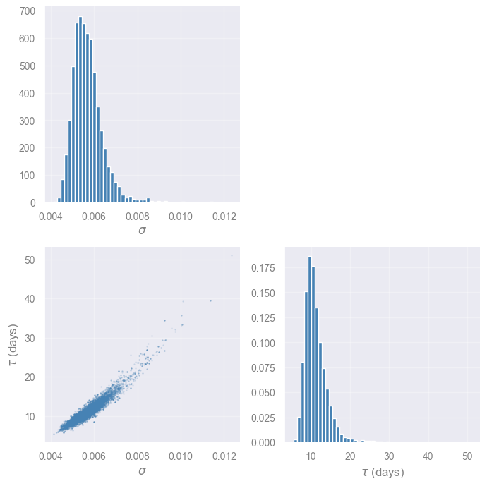
σ = 5.6033e-03 +6.6919e-04 −5.1599e-04
τ = 10.6 +3.0 −1.9 days
# GP posterior prediction (forecasting)
# Use median MCMC parameters
sigma_med = np.median(sigma_s)
tau_med = np.median(tau_s)
t_pred = np.linspace(t.min(), t.max(), 1000)
K_obs = drw_kernel(t, t, sigma_med, tau_med)
K_obs[np.diag_indices_from(K_obs)] += yerr**2
K_xo = drw_kernel(t_pred, t, sigma_med, tau_med) # (N_pred, N_obs)
cf = cho_factor(K_obs, lower=True)
mu = K_xo @ cho_solve(cf, y_res) + y_mean # posterior mean
v = cho_solve(cf, K_xo.T) # (N_obs, N_pred)
var = sigma_med**2 - np.sum(K_xo.T * v, axis=0) # posterior variance (diagonal only)
std = np.sqrt(np.maximum(var, 0))
fig, ax = plt.subplots(figsize=(13, 4))
ax.fill_between(t_pred, mu - 2*std, mu + 2*std, alpha=0.15, color="crimson", label=r"2$\sigma$")
ax.fill_between(t_pred, mu - std, mu + std, alpha=0.30, color="crimson", label=r"1$\sigma$")
ax.plot(t_pred, mu, lw=1.2, color="crimson", label="GP mean")
ax.errorbar(t, y, yerr=yerr, fmt=".", ms=3, lw=0.5, color="steelblue", alpha=0.6, label="data")
ax.set_xlabel("Time (days)")
ax.set_ylabel("Rate")
ax.set_title(rf"DRW forecast — $\sigma$ = {sigma_med:.3e}, $\tau$ = {tau_med:.1f} days")
ax.legend(loc="upper right")
plt.tight_layout()
plt.show()
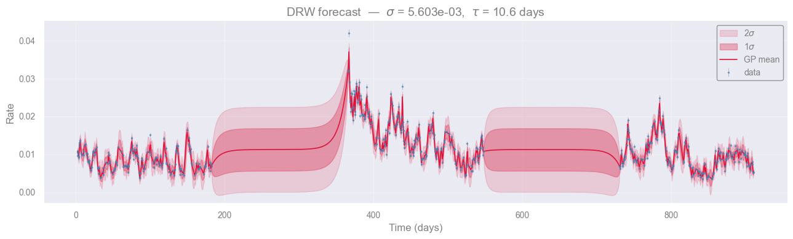
Task [5 min]
Inspect the DRW posterior prediction above.
Where is the \(1\sigma\) uncertainty band widest? Why does it widen there?
What would happen to the uncertainty at times well outside the observed baseline?
[Spoiler] (click here to expand)
The band is narrowest right at/near observed data points (where correlation with a nearby observation is high, so the reduction term is large) and widest in the gaps between observations, and especially at the edges/extrapolated ends of \(t_{\mathrm{pred}}\). There, the correlation to any observed point decays (the exponential kernel \(e^{-|\Delta t|/\tau}\) falls off), so less of the reduction term survives and the variance relaxes back toward the prior value \(\sigma^2\).
It does not blow up or shrink further, it just flattens out to the prior. This is a direct consequence of the DRW being stationary: forecasts far from data revert to knowing nothing more than the long-run mean and variance.
Connection to the power spectrum
The CARMA PSD has a closed form:
This is a rational function of \(\omega\) — a ratio of polynomials. For the DRW (CAR(1)), this becomes the classic Lorentzian:
flat for \(\omega \ll 1/\tau\) and falling as \(\omega^{-2}\) for \(\omega \gg 1/\tau\) — the canonical “broken power-law” shape seen in AGN light curves. Higher-order CARMA can reproduce more complex broken-power-law and QPO-bearing spectra without needing infinite-parameter models. This is the main reason CARMA has become a standard tool for AGN variability, X-ray binary timing, and stellar microvariability.
The CARMA PSD is always a rational function of frequency — a ratio of two polynomials in \(\omega\). This means a CARMA(\(p\), \(q\)) model can fit any broken-power-law or QPO-shaped spectrum using only \(p + q + 1\) parameters, without assuming a specific physical mechanism for the variability.
# CARMA(1,0) / DRW PSD: P(f) = 2σ²τ / (1 + (2πfτ)²)
dt_min = np.min(np.diff(np.sort(t)))
f_carma = np.geomspace(1.0 / t.max(), 1.0 / (2.0 * dt_min), 400)
psd_mc = np.array([
2 * s**2 * tau / (1 + (2 * np.pi * f_carma * tau)**2)
for s, tau in zip(sigma_s[::5], tau_s[::5])
])
psd_med = np.median(psd_mc, axis=0)
psd_lo = np.percentile(psd_mc, 16, axis=0)
psd_hi = np.percentile(psd_mc, 84, axis=0)
# Plot
fig, ax = plt.subplots(figsize=(11, 5))
ax.loglog(1 / freqs, psd, lw=0.7, color="darkorange", alpha=0.6, label="Regular LC — FFT periodogram")
ax.fill_between(1 / f_carma, psd_lo, psd_hi,
alpha=0.3, color="crimson", label=r"CARMA(1,0) — 1$\sigma$ MC")
ax.loglog(1 / f_carma, psd_med, lw=2, color="crimson", label="CARMA(1,0) — median")
ax.axvline(tau_med, ls="--", color="grey", lw=1.2,
label=rf"$\tau_{{DRW}}$ = {tau_med:.1f} days")
ax.set_xlabel("Period (days)")
ax.set_ylabel("PSD")
ax.set_title("PSD comparison: regular FFT vs. CARMA model")
ax.invert_xaxis()
ax.legend(fontsize=9)
plt.tight_layout()
plt.show()
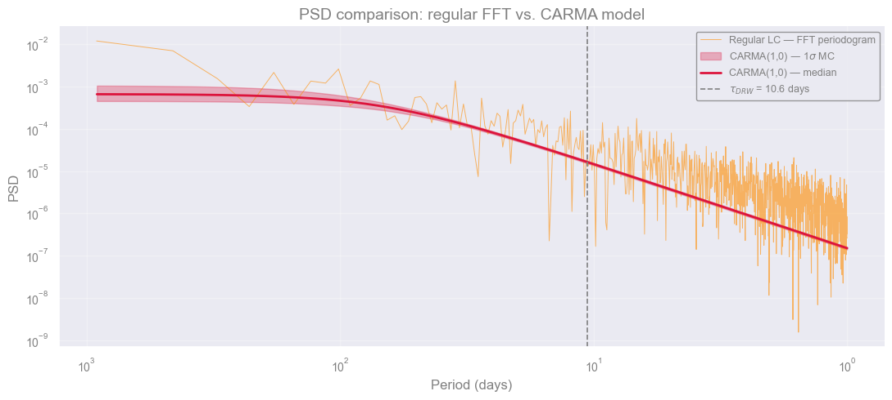
Exercise Is the DRW a good model for this data? [10 min]
Objective: Critically evaluate the DRW fit using the results already in front of you.
No new code needed, reason from the plots and printed values above.
Compare the bend timescales. The data were simulated with a true bend at \(T_{\text{bend}} = 11.6\) days. The DRW MCMC fit gives a \(\tau\) printed above. Compute \(T_{\text{bend}} = 2\pi\tau\) and compare to 11.6 days. Is the DRW recovering the right timescale?
Think about the model. The simulation used a PSD with slope \(-1\) at low frequencies and slope \(-2\) at high frequencies. The DRW (CARMA(1,0)) assumes a flat PSD at low frequencies. What effect does this mismatch have on the recovered \(\tau\)?
[Answers] (click here to expand)
1. Comparing bend timescales
The true bend is at \(T_{\text{bend}} = 11.6\) days. Compute \(2\pi\tau\) from the printed \(\tau\) expect it to be in the right ballpark but not exact, because the DRW assumes a flat PSD at low frequencies while the simulation has slope \(f^{-1}\) there. This model mismatch biases the recovered \(\tau\).
2. Model mismatch is the main issue
The DRW (CARMA(1,0)) is characterised by a PSD that is flat at \(f \ll 1/\tau\) and falls as \(f^{-2}\) at \(f \gg 1/\tau\). The simulated data has slope \(f^{-1}\) at low frequencies, a different shape. No matter how good the data are, the DRW cannot fit the true PSD perfectly. A CARMA(2,1) or CARMA(2,0) model maybe are more sutable to reproduce a non-zero low-frequency slope.
Conclusions#
What we learned?
Describing a random process in the time domain (stationarity, autocovariance, colors of noise) and in the frequency domain (FFT, PSD, bending power law), then handling irregular sampling with CARMA/DRW and MCMC.
What we can do now? Take a light curve, fit its PSD, and report a variability timescale with an uncertainty.
The limitations.
DRW only fits a Lorentzian PSD (flat → \(f^{-2}\)); it can’t match other slopes, as seen in the DRW exercise.
FFT needs uniform sampling.
CARMA/GP scales as \(O(N^3)\).
Alternatives :
Power-law fit: quick look, regular sampling only.
Lomb–Scargle: irregular sampling, just detecting a period. AstroPy Implementetion
Higher-order CARMA: other slopes, bends, or QPOs. Implementetion using eztao
What does it mean that we learned to do PSD fitting?
We can turn “the flux goes up and down” into a physical timescale with an uncertainty.
###EOF